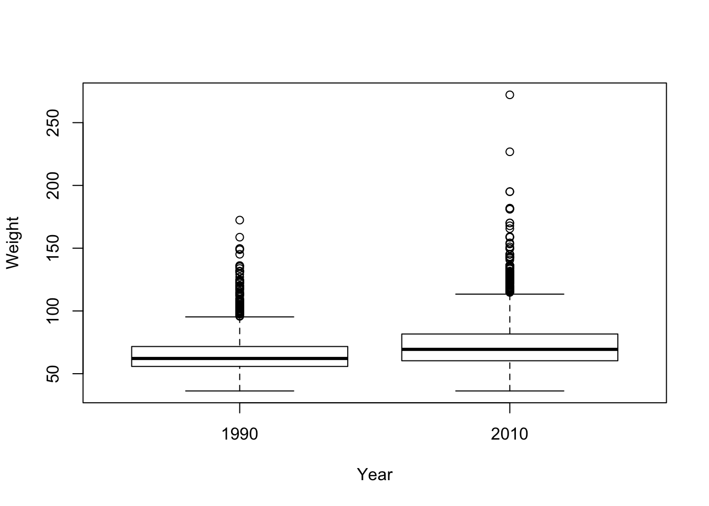
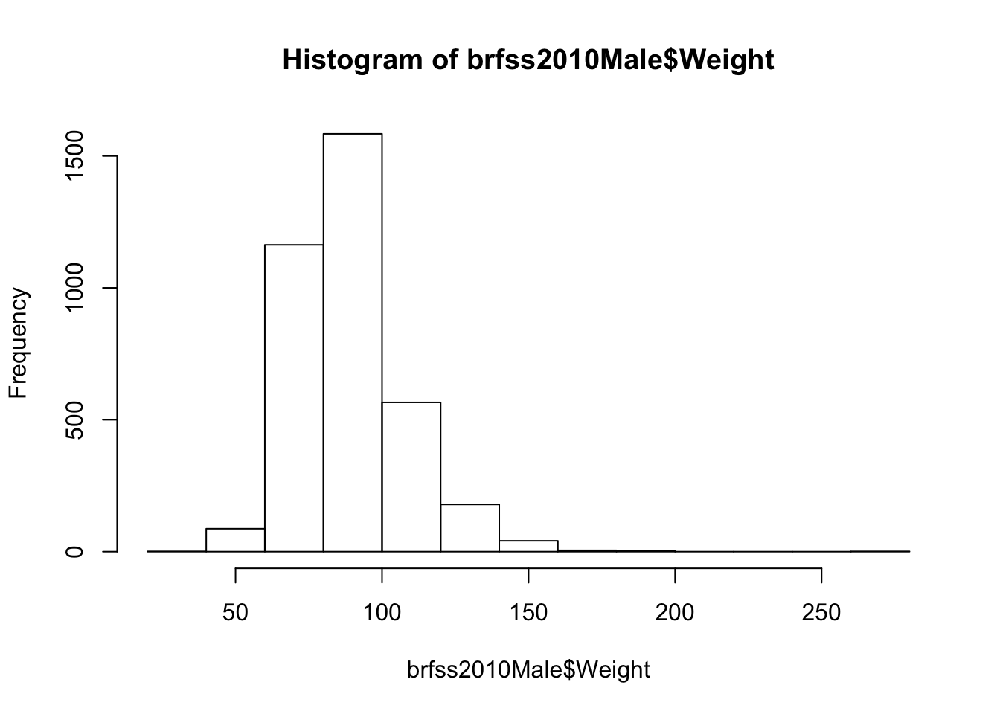
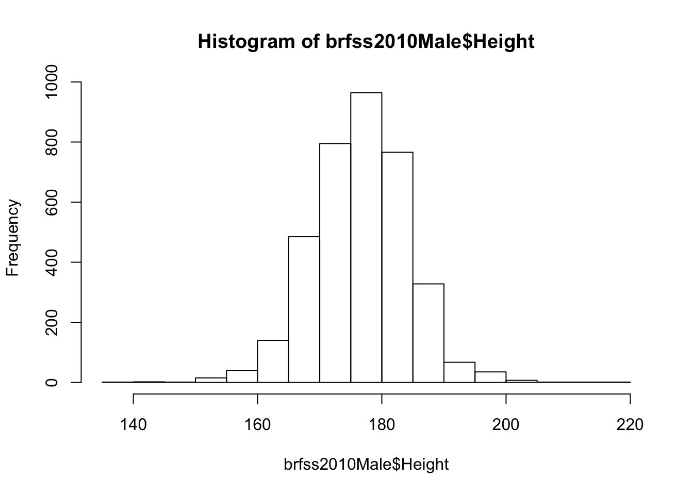
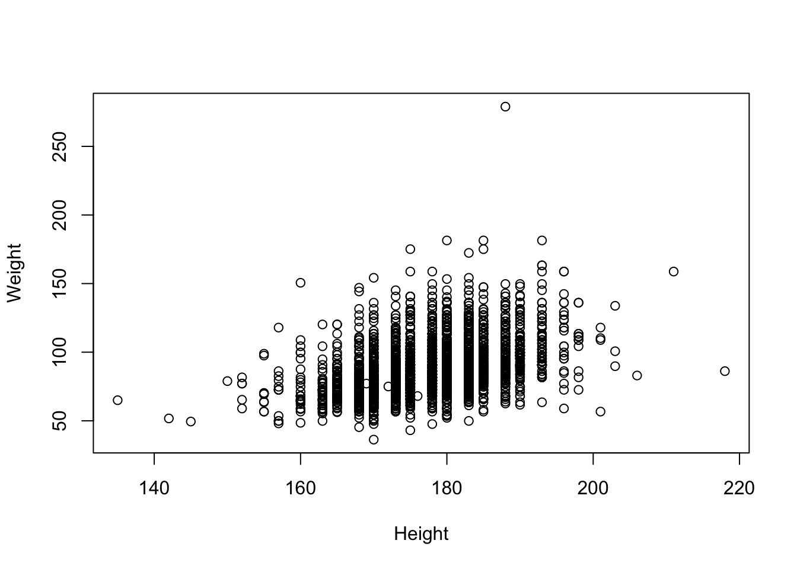
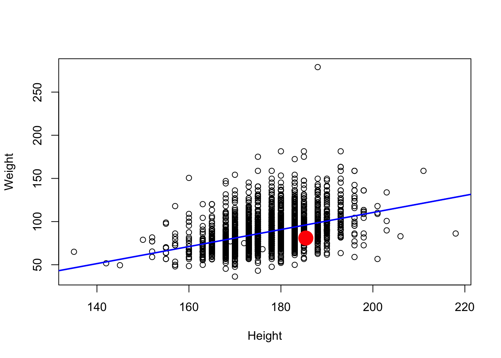

We will explore a subset of data collected by the CDC through its extensive Behavioral Risk Factor Surveillance System ([BRFSS][]) telephone survey. Check out the link for more information. We’ll look at a subset of the data.
First, we need to get the data. Either download the data from THIS LINK or have R do it directly from the command-line (preferred):
download.file('https://raw.githubusercontent.com/seandavi/ITR/master/BRFSS-subset.csv',
destfile = 'BRFSS-subset.csv')path <- file.choose() # look for BRFSS-subset.csvstopifnot(file.exists(path))
brfss <- read.csv(path)Using the data exploration techniques you have seen to explore the brfss dataset.
You may want to investigate individual columns visually using plotting like hist(). For categorical data, consider using something like table().
R read Year as an integer value, but it’s really a factor
brfss$Year <- factor(brfss$Year)brfssFemale <- brfss[brfss$Sex == "Female",]
summary(brfssFemale)## Age Weight Sex Height Year
## Min. :18.0 Min. : 36 Female:12039 Min. :105 1990:5718
## 1st Qu.:37.0 1st Qu.: 58 Male : 0 1st Qu.:158 2010:6321
## Median :52.0 Median : 66 Median :163
## Mean :51.9 Mean : 69 Mean :163
## 3rd Qu.:67.0 3rd Qu.: 77 3rd Qu.:168
## Max. :99.0 Max. :272 Max. :201
## NA's :103 NA's :560 NA's :140plot(Weight ~ Year, brfssFemale)
t.test(Weight ~ Year, brfssFemale)##
## Welch Two Sample t-test
##
## data: Weight by Year
## t = -27, df = 11079, p-value <2e-16
## alternative hypothesis: true difference in means is not equal to 0
## 95 percent confidence interval:
## -8.72 -7.55
## sample estimates:
## mean in group 1990 mean in group 2010
## 64.8 73.0brfss2010Male <- subset(brfss, Year == 2010 & Sex == "Male")
summary(brfss2010Male)## Age Weight Sex Height Year
## Min. :18.0 Min. : 36.3 Female: 0 Min. :135 1990: 0
## 1st Qu.:45.0 1st Qu.: 77.1 Male :3679 1st Qu.:173 2010:3679
## Median :57.0 Median : 86.2 Median :178
## Mean :56.2 Mean : 88.8 Mean :178
## 3rd Qu.:68.0 3rd Qu.: 99.8 3rd Qu.:183
## Max. :99.0 Max. :279.0 Max. :218
## NA's :30 NA's :49 NA's :31hist(brfss2010Male$Weight)
hist(brfss2010Male$Height)
plot(Weight ~ Height, brfss2010Male)
fit <- lm(Weight ~ Height, brfss2010Male)
fit##
## Call:
## lm(formula = Weight ~ Height, data = brfss2010Male)
##
## Coefficients:
## (Intercept) Height
## -86.875 0.987Summarize as ANOVA table
anova(fit)## Analysis of Variance Table
##
## Response: Weight
## Df Sum Sq Mean Sq F value Pr(>F)
## Height 1 197664 197664 694 <2e-16 ***
## Residuals 3617 1030484 285
## ---
## Signif. codes: 0 '***' 0.001 '**' 0.01 '*' 0.05 '.' 0.1 ' ' 1plot(Weight ~ Height, brfss2010Male)
abline(fit, col="blue", lwd=2)
# Substitute your own weight and height...
points(73 * 2.54, 178 / 2.2, col="red", cex=4, pch=20)
class(fit) # 'noun'
methods(class=class(fit)) # 'verb'plot(fit)
# Note that the "plot" above does not have a ".lm"
# However, R will use "plot.lm". Why?
?plot.lm